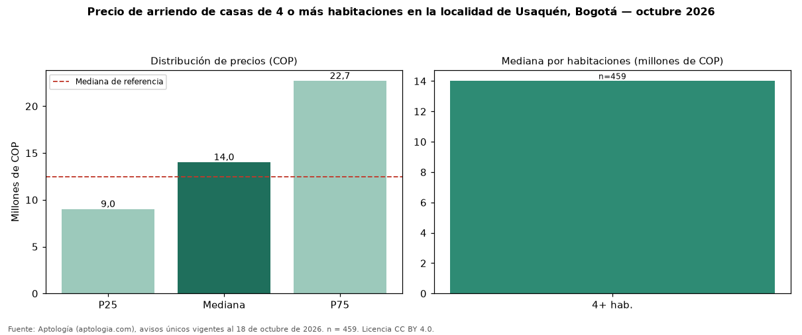

Precio de arriendo de casas de 4 o más habitaciones en la localidad de Usaquén, Bogotá — octubre 2026
En la localidad de Usaquén, Bogotá, la mediana de canon mensual de casas de 4 o más habitaciones es COP 14 millones (n = 459 avisos únicos). Eso es 12 % más que la mediana de casas en la localidad de Usaquén, Bogotá (COP 12.500.000). El rango intercuartílico va de COP 9.000.000 a COP 22.683.650 (razón 2,5). Por metro cuadrado, la mediana es COP 35.714/m² (−1 % frente a COP 36.036/m²), puesto 2 de 7 localidades comparables. Cruzando con la oferta de venta equivalente, la rentabilidad bruta implícita es 6,9 % anual. En todo Bogotá, la misma combinación tiene mediana COP 12 millones (+17 %). En el mismo grupo: 1 habitación, COP 10 millones; 2 habitaciones, COP 4.500.000; 3 habitaciones, COP 9.250.000. Datos abiertos CC BY 4.0 de Aptología; fuente y búsqueda de inmuebles: https://www.aptologia.com/arriendo-zona/bogota/localidad-usaquen. Archivos: PDF de 2 páginas, CSV con las cifras y gráfica PNG.

| Avisos únicos | 459 |
|---|---|
| Percentil 25 | COP 9.000.000 |
| Mediana | COP 14.000.000 |
| Percentil 75 | COP 22.683.650 |
| Mediana por m² | COP 35.714 |
Fuente: avisos vigentes de portales inmobiliarios recopilados por Aptología, deduplicados (mínimo 30 avisos únicos por celda). Precios pedidos, no cerrados. Fecha: 2026-10-18.